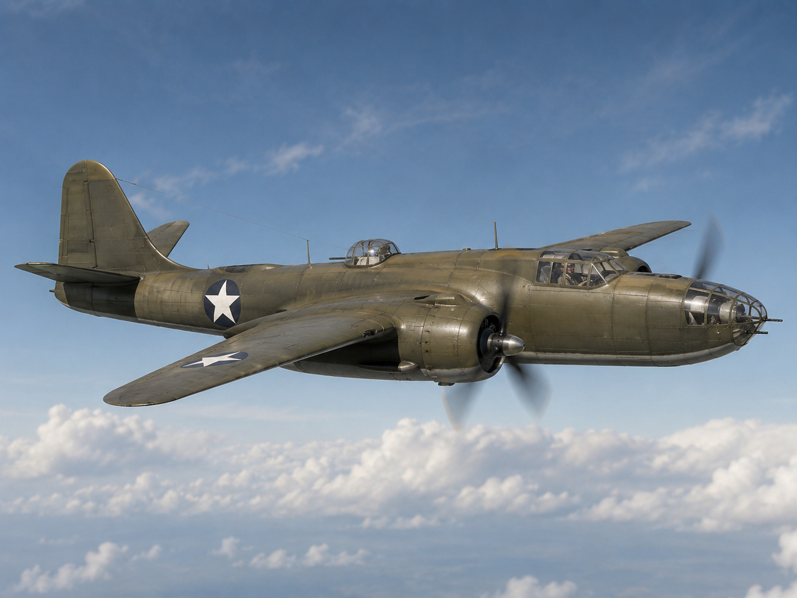

USAAF Lightning operations · 1941–1945
The P-38 served in every major USAAF theatre as interceptor, escort fighter, fighter-bomber and photo-reconnaissance aircraft. Its most famous impact came in the Pacific, where range, speed and firepower suited vast distances and high-altitude combat. For modellers, the big traps are boom alignment, variant nose/cooler detail, turbo-supercharger staining and theatre-specific finish.

Role & strengths
- Twin-boom USAAF fighter and fighter-bomber
- Concentrated nose armament with no convergence issue
- Pacific long-range interception and escort identity
- F-5 photo-reconnaissance route with camera noses
- Complex engine, turbo and boom weathering opportunities
Key theatres
- Pacific and South-West Pacific fighter operations
- Eighth/Ninth Air Force European escort and tactical use
- Mediterranean long-range escort
- F-5 photo reconnaissance across Europe and Pacific
Specification P-38L
Survivors today

Surviving Lightnings are especially useful for tricycle landing gear stance, cockpit nacelle, boom alignment, radiator/intercooler detail and natural metal variation.
View survivorsTimeline highlights
Build this Lightning as…
Choose the theatre and variant first. A Pacific ace aircraft, ETO invasion-stripe P-38, Mediterranean escort, F-5 recon Lightning and late P-38L fighter-bomber all need different nose, stores and weathering decisions.
Aircraft identity
The P-38 lives or dies on boom, tailplane and undercarriage alignment. Dry-fit heavily before committing glue.
P-38F/G/J/L and F-5 noses, intakes and stores differ. Choose the aircraft before adding camera, rocket or tank details.
Paint scheme cards
Useful for early Pacific, MTO and ETO Lightnings. Add sun fading, turbo staining and panel wear.
Natural metal P-38s need subtle panel variation and careful anti-glare/nacelle detail.
ETO tactical Lightnings may show stripe wear, partial overpainting and forward-field grime.
Camera noses, clean lines and mission wear should drive recon builds.
Campaign cards
Use 475th, 49th or 8th Fighter Group routes. Focus on sun, coral dust, long-range tanks and famous ace subjects.
Use 20th, 55th or 364th Fighter Group routes. Invasion stripes and natural metal/OD transitions matter.
Use 1st, 14th or 82nd Fighter Group routes with dusty airfields and long-range escort work.
Camera noses, cleaner external fit and photo-recon mission wear make a different modelling route.
Build difficulty and related guides
High. Twin booms, tailplane alignment and tricycle stance make the P-38 more demanding than many single-engine fighters.
Very high. Boom alignment, nacelles and gear stance need repeated dry fitting.
Medium-high. NMF, OD fading, turbo staining and Pacific dust all need restraint.
USAAF Lightning fighter groups and squadrons
Sortable P-38 Lightning unit cards covering Pacific fighter groups, ETO/MTO escort units, F-5 reconnaissance and late-war fighter-bomber routes.
P-38 Lightning operating map
Airfield info
Click a marker to show linked Lightning unit cards and modelling notes.
Campaign timeline
Survivors
Books and reference sources
P-38 Lightning build guide
P-38 Lightning videos, photos and archive material
Media replaces the old separate walkaround tab: cockpit, exhaust, undercarriage, markings, survivor references, archive imagery and video cards are grouped here.